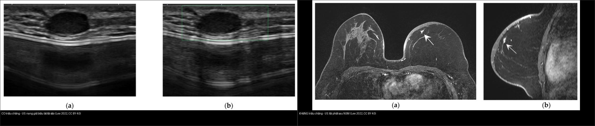
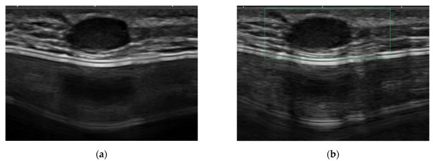
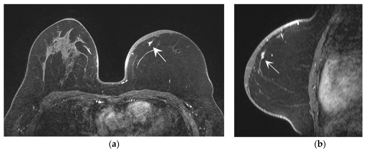
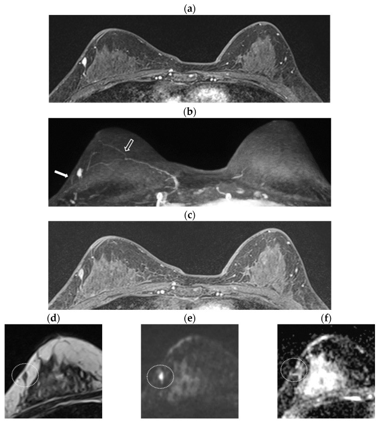
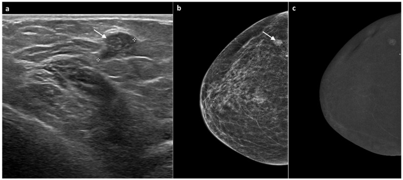
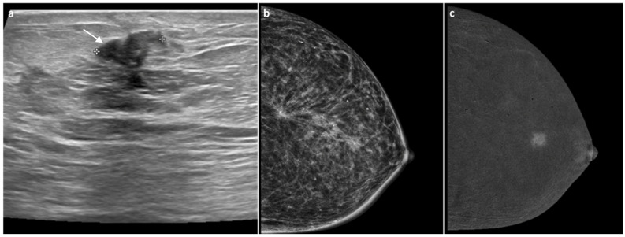
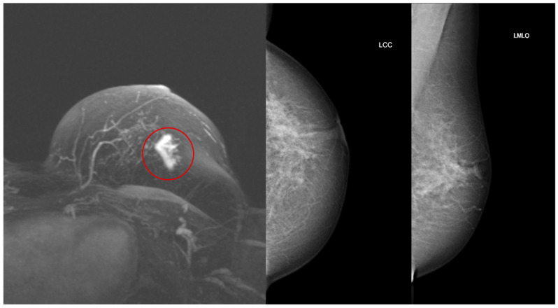
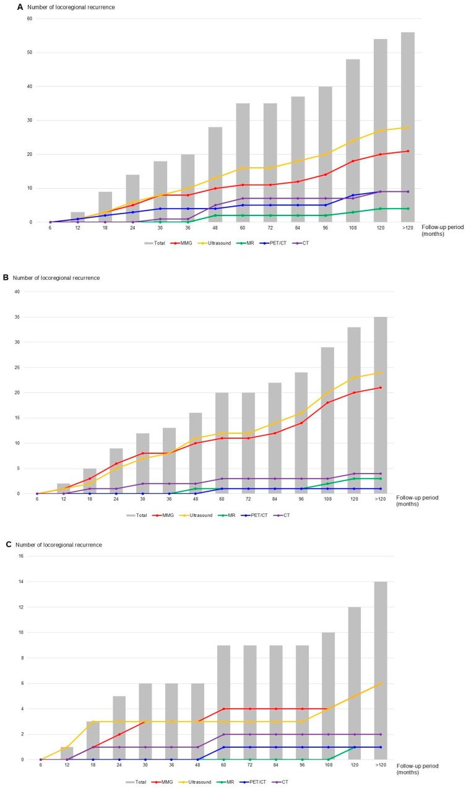
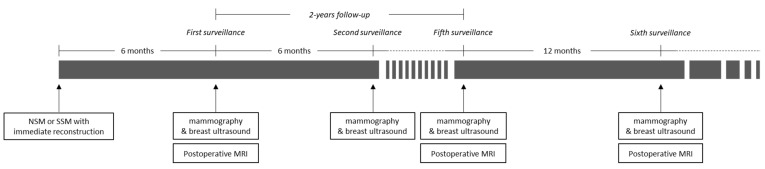

522 — Theo dõi sau điều trị ung thư vú: nhũ ảnh/DBT, siêu âm, MRI & CEM — ngưỡng nghi tái phát / Breast cancer post-treatment surveillance
Tags: pattern:theo-doi-tai-phat pattern:u-tai-phat pattern:u-moi-doi-ben vung:vu score:BI-RADS score:RECIST protocol:nhu-anh protocol:MRI-vu protocol:CEM
Mức chắc chắn (certainty): tổng hợp y văn (literature synthesis) — nhóm tự biên từ y văn mở (Europe PMC/PMC: J Cancer Res Clin Oncol 2024, Diagnostics 2022 & 2026, Journal of Imaging 2025, Cancers 2025 & 2026, Ann Surg Oncol 2024, Insights into Imaging 2026, Asian Pac J Cancer Prev 2026); ảnh minh họa đều CC BY/BY-NC.
1. Tổng quan — "chuyện sau điều trị" + cơ chế hình ảnh
- Bối cảnh: sau phẫu thuật bảo tồn (breast-conserving surgery — BCS) + xạ trị, hoặc cắt toàn bộ tuyến (mastectomy) có/không tái tạo, người bệnh bước vào một chương mới của hình ảnh học: mô vú mất dấu mốc + xơ hóa + phù nề xạ → sẹo lành, hoại tử mỡ, biến dạng cấu trúc và tái phát có thể trông na ná nhau trên cùng một phim. Đây là phần nối tiếp trực tiếp của bài 516 – Hình ảnh vú sau điều trị.
- Phải tách hai câu hỏi hoàn toàn khác nhau (khác nhau về giá trị và cách chụp):
- Tái phát tại chỗ–vùng (locoregional recurrence) = chữa khỏi được nếu bắt sớm → đây là lý do của mọi lần chụp theo dõi. Gồm: tái phát trong vú đã mổ, thành ngực/da, hạch vùng (nách, trên đòn, hạch vú trong) và ung thư vú MỚI ở bên đối diện (không phải "di căn").
- Di căn xa (distant metastasis) = chụp tầm soát thường quy KHÔNG kéo dài sống còn → không chụp định kỳ cho người không triệu chứng.
- TẠI SAO hình ảnh học tách được lành/ác (cơ chế vật lý):
- Tái phát/ung thư mới = mô u còn sống → tạo tân mạch (angiogenesis) → trên CEM (contrast-enhanced mammography) và MRI DCE ngấm thuốc mạnh, nhanh–thoát sớm (washout); mật độ tế bào cao → DWI sáng, ADC thấp. Vì vậy ngấm thuốc = chốt của mô sống.
- Sẹo xơ/hoại tử mỡ = mô chết + xơ → không có mạch → không ngấm thuốc (ngoài viền viêm mô hạt thoáng qua); thành phần mỡ giữ tín hiệu T1 cao, mất khi fat-sat. (Chi tiết vật lý ở bài 516.)
- Ngưỡng định lượng bắt buộc:
- Nguy cơ tái phát tại chỗ–vùng + ung thư vú đối bên tích lũy tới ~20% trong 20 năm đầu (PMC11021243).
- Độ nhạy phát hiện tái phát: MRI 97,9% ≫ siêu âm 67,8% ≈ nhũ ảnh 66,3% (1499 bệnh nhân, 176 ca tái phát, PMC11021243).
- Nhũ ảnh gộp (meta 8 nghiên cứu): Se 81% (95% CI 0,63–0,91), Sp 71% (0,31–0,93), Acc 76%, giảm tử vong OR 0,50 (95% CI 0,27–0,92) so với không chụp (PMC13499620).
- CEM khi nhũ ảnh/siêu âm nghi ngờ: Se 90,9%, Sp 86,2%, Acc 88,7%; κ = 0,76 (62 tổn thương, 88,2% tổn thương ngấm là ác, 89,3% không ngấm là lành, PMC12734039).
- MRI rút gọn (abbreviated breast MRI — ABMR) "FAST": Se 81%, Sp 88,1–90,5% — thêm chuỗi xung không cải thiện có ý nghĩa (p > 0,05) (PMC13114410).
- Nhũ ảnh lúc 6 tháng sau mổ phát hiện 0 ca tái phát (95% CI 0–0,38%); mọi ca tái phát trong năm đầu đều do siêu âm phát hiện (961 bệnh nhân, tuân thủ 98,2%, PMC12784814) → nên bắt đầu nhũ ảnh ở 12 tháng, không bắt buộc mốc 6 tháng.
- Chụp di căn xa dày (high-intensity): phát hiện di căn sớm hơn nhưng KHÔNG cải thiện sống còn đặc hiệu ung thư vú (HR 3,13 thô → mất ý nghĩa sau hiệu chỉnh, PMC11413078).
2. Mẫu hình (pattern) + chẩn đoán phân biệt theo bối cảnh (Gamut)
- Khuôn 1 — Vú đã mổ BCT + xạ, có bất thường tại sẹo. Gamut: tái phát trong vú (in-breast recurrence) vs sẹo xơ/biến dạng cấu trúc vs hoại tử mỡ (nang dầu/vôi hóa vỏ) vs biến đổi xạ cấp vs u mới nguyên phát. Chốt: tiến triển sau giai đoạn ổn định + ngấm thuốc mới + DWI sáng/ADC thấp (bài 516).
- Khuôn 2 — Vú đã cắt toàn bộ tuyến + tái tạo (NSM/SSM). Gamut: tái phát trong vạt/da vs sẹo vs huyết thanh tụ vs sarcoma mạch do xạ (RAAS) — bài 523. Vì vú tái tạo không còn tuyến để nhũ ảnh, đây là nơi MRI theo dõi tỏa sáng: Se 95,2% vs siêu âm 38,1% cho tổn thương trong vạt (trừ tái phát da) (PMC9497711).
- Khuôn 3 — Bên vú ĐỐI DIỆN. Gamut: ung thư vú mới nguyên phát đối bên (nguy cơ tăng theo thời gian, cần chụp chuẩn) vs di căn chéo hiếm. Trong 35 ca tái phát trong vú: 60% ở bên đối diện, 40% cùng bên, và bên đối diện hầu như luôn phát hiện bằng CẢ nhũ ảnh + siêu âm (chỉ 9,5% phát hiện đơn độc 1 phương tiện) (PMC12784814).
- Khuôn 4 — Hạch vùng. Gamut: tái phát hạch nách/trên đòn/hạch vú trong vs hạch phản ứng hậu phẫu/hậu xạ vs hạch siêu âm giả sau tiêm filler. Định hướng siêu âm + chọc kim; PET/CT không thay thế mô bệnh.
- Khuôn 5 — Người bệnh có triệu chứng (đau xương, khó thở, đau đầu, sụt cân). Đây là cửa vào của chụp di căn xa (xương/ngực/bụng–chậu/não). Không chụp dàn trải khi không triệu chứng (PMC11413078).
- Khuôn 6 — Theo dõi ung thư vú thể tiểu thùy (ILC). ILC tiến triển mờ, dễ âm tính giả trên nhũ ảnh → MRI có giá trị gia tăng phát hiện u mới sau mổ (PMC12985115).
- Gợi nhớ "SURVEIL": Scar/fat necrosis (ổn định), Unseen on MG (vú tái tạo → MRI), Recurrence (ngấm + tiến triển), Violaceous skin (RAAS, bài 523), Effusion (seroma vs BIA-ALCL, bài 516), Ipsilateral vs contralateral, Lobular → MRI.
3. Bảng so sánh phân biệt (ma trận đối chiếu)
| Thực thể (entity) | Hình ảnh điển hình (nhũ ảnh / siêu âm / MRI-CEM theo thì) | Chốt vào (rule-in) | Chốt loại (rule-out) | Gợi ý xác nhận |
|---|---|---|---|---|
| Tái phát trong vú (in-breast recurrence) | Khối đặc mới/tăng dần, vôi hóa đa hình phân nhánh mới, NME tại sẹo; siêu âm: khối giảm hồi âm có mạch; MRI: ngấm nhanh–thoát (Type III) + DWI sáng/ADC thấp | TIẾN TRIỂN sau giai đoạn ỔN ĐỊNH + ngấm thuốc mới + DWI sáng | Ổn định ≥ 2 lần chụp nhiều năm + không ngấm mới → loại tái phát | Sinh thiết định hướng (siêu âm/MRI/CEM) |
| Sẹo xơ / biến dạng cấu trúc | Biến dạng gai tại vết mổ, vôi hóa thô, kẹp phẫu thuật; MRI không ngấm (hoặc ngấm mỏng, ổn định) | ỔN ĐỊNH trên các phim trước + không ngấm mới | Tăng kích thước/ngấm mới → không còn là sẹo | So phim cũ + MRI/CEM |
| Hoại tử mỡ (fat necrosis) | Nang dầu trong sáng + vôi hóa vỏ "vỏ trứng"; MRI: lõi không ngấm + viền ngấm không đều, có thành phần mỡ (T1FS tối) | Thành phần MỠ + lõi KHÔNG ngấm | Ngấm lõi nhanh–thoát + DWI sáng → không phải hoại tử mỡ | So phim cũ (nếu điển hình → BI-RADS 2) |
| Tái phát vú TÁI TẠO (sau NSM/SSM) | Siêu âm khó thấy tổn thương trong vạt (Se 38,1%); MRI Se 95,2%, nhất là nốt < 1 cm không triệu chứng | MRI phát hiện nốt nhỏ trong vạt/trước cơ ngực | Siêu âm âm KHÔNG loại trừ (Se chỉ 38,1%) | MRI ≤ 2 năm đầu + sinh thiết MRI |
| Ung thư vú MỚI đối bên | Nhũ ảnh ± siêu âm thấy khối/vôi hóa mới bên đối diện; thường phát hiện 2 phương tiện phối hợp | Tổn thương MỚI ở bên đối diện (khác vị trí & mô học) | Cùng vị trí + cùng mô học → tái phát cùng bên | Nhũ ảnh hàng năm + mô bệnh so sánh |
| Sarcoma mạch do xạ (RAAS) | Vết tím/bầm dai dẳng tại vùng xạ + dày da; MRI NME/dày da ngấm; US khối giảm âm có mạch ngoại vi | Da tím–bầm KHÔNG tan + muộn sau xạ + MYC dương | Tụ máu tan dần + tiền sử chấn thương → không phải RAAS | Sinh thiết sâu + MYC IHC/FISH (bài 523) |
| Di căn xa ở người KHÔNG triệu chứng | — (chụp dàn trải không cải thiện sống còn) | Chỉ khi có triệu chứng/bất thường sinh hóa | Không có triệu chứng + không chỉ điểm → không chụp | Chụp theo triệu chứng; RECIST 1.1 khi đã có bệnh (bài 577) |

Trái: tái phát có triệu chứng — nốt giảm hồi âm tròn, nhẵn tại sẹo, giả dạng nang biểu bì (dễ bị bỏ qua). Phải: tái phát không triệu chứng — tổn thương nhỏ phát hiện trên MRI (kèm siêu âm). Cùng một bệnh cảnh "vú đã mổ" — chỉ mô bệnh mới chốt. Ảnh ghép letterbox, CC BY 4.0 (Lee J et al., Diagnostics 2022).Dấu hiệu "chốt" phân biệt tái phát vs thay đổi hậu phẫu
- Mô sống ngấm thuốc: CEM (tái tổ hợp) ngấm = mô sinh mạch; 88,2% tổn thương ngấm là ác, 89,3% không ngấm là lành (PMC12734039). Đây là cơ sở để CEM thay MRI khi MRI không sẵn có/chống chỉ định.
- Thời điểm: tổn thương sớm ≤ 6 tháng thường là hậu phẫu lành; mới xuất hiện sau một giai đoạn ổn định mới đáng lo.
- Vú tái tạo: siêu âm âm KHÔNG loại trừ (Se 38,1%) — đừng yên tâm vì "siêu âm bình thường".
4. Protocol theo dõi + ngưỡng xử trí + lưu đồ
- Lịch theo dõi tại chỗ–vùng (chuẩn thực hành):
- Nhũ ảnh 2D/DBT hàng năm vú đã mổ (+ bên còn lại), khởi đầu 12 tháng sau mổ (mốc 6 tháng ít giá trị gia tăng: 0 ca phát hiện ở 961 bệnh nhân, PMC12784814) — trừ khi có chỉ định riêng.
- Bổ sung siêu âm (vú đặc, khối sờ thấy) — đặc biệt năm đầu và vú tái tạo.
- MRI khi: vú đặc ACR C/D, thể tiểu thùy (ILC), ca nguy cơ cao/HBOC, hoặc vú tái tạo (Se 95,2% vs siêu âm 38,1%, PMC9497711); có thể dùng ABMR "FAST" (Se 81%).
- CEM khi nhũ ảnh/siêu âm nghi ngờ mà MRI không sẵn có: Se 90,9%/Sp 86,2% (PMC12734039).
- Khám lâm sàng: đều đặn 3–6 tháng trong 3 năm đầu, rồi 6–12 tháng tới 5 năm, sau đó hàng năm (kèm tự khám).
- KHÔNG chụp tầm soát di căn xa thường quy ở người không triệu chứng (xương/ngực/bụng–chậu/PET toàn thân), không xét nghiệm dấu ấn CA 15-3/CA 27.29 định kỳ — chụp dày phát hiện sớm hơn nhưng không cải thiện sống còn (PMC11413078). Chỉ chụp khi có triệu chứng (đau xương, khó thở, đau đầu, bất thường men gan).
- Khi đã có bệnh di căn: theo dõi bằng RECIST 1.1 (PD = tăng ≥ 20% VÀ ≥ +5 mm so nadir) — chi tiết ở bài 577 – Theo dõi tái phát ung thư phụ khoa.
- Nguy cơ cá nhân hóa: điểm IBIS BC-LTR thay đổi theo thời gian (giảm trung bình 23% → 19% sau 10 năm; 44% đổi nhóm nguy cơ, 36% xuống thấp hơn, 8% lên cao hơn) → đánh giá lại định kỳ để điều chỉnh lịch chụp (PMC13391461).
flowchart TD
A[Người bệnh sau điều trị ung thư vú - đến lịch theo dõi] --> B{Mục tiêu: tái phát TẠI CHỖ-VÙNG?}
B -->|Có| C[NHŨ ẢNH 2D/DBT hàng năm + SIÊU ÂM]
C --> D{Có yếu tố cần MRI/CEM? Dense C-D, ILC, nguy cơ cao, vú tái tạo}
D -->|Có| E[MRI vú +/- ABMR FAST hoặc CEM]
D -->|Không| F[Nhũ ảnh + siêu âm âm tính - tiếp tục theo lịch]
E --> G{Tổn thương mới/ngấm thuốc/tiến triển?}
C --> G
G -->|Không, ổn định| F
G -->|Có| H[SINH THIẾT định hướng - so mô bệnh với u nguyên phát]
H --> I{Tiêu chuẩn sarcoma do xạ: trong vùng xạ + khác mô học + độ trễ tối thiểu 3 năm?}
I -->|Có| J[Ra soát SARCOMA MẠCH: MRI mapping + MYC - bài 523]
I -->|Không| K[TÁI PHÁT CARCINOMA: đánh giá lại giai đoạn + RECIST]
A --> L{Có TRIỆU CHỨNG di căn xa?}
L -->|Không| M[KHÔNG chụp tầm soát di căn xa thường quy / không dấu ấn định kỳ]
L -->|Có| N[Chụp theo triệu chứng: xương/ngực/bụng-chậu/não, PET-CT khi phù hợp]
5. Biến thể bình thường và cạm bẫy
- Cạm bẫy "siêu âm bình thường" ở vú tái tạo: siêu âm chỉ có Se 38,1% cho tái phát trong vạt (vs MRI 95,2%) → yên tâm sai (PMC9497711). Ở vú tái tạo, MRI là chuẩn.
- Cạm bẫy "mọi thứ hậu phẫu đều là tái phát": phù nề/dày da trong 6–12 tháng đầu sau xạ là viêm, không phải u; hoại tử mỡ có thể ngấm viền và xếp BI-RADS 4 → tìm thành phần mỡ + lõi không ngấm (bài 516).
- Cạm bẫy "chỉ nhìn bên đã mổ": 60% tái phát trong vú là ở bên ĐỐI DIỆN (PMC12784814) → luôn chụp cả hai bên, kể cả bên lành.
- Cạm bẫy mốc 6 tháng: làm nhũ ảnh 6 tháng khi sẹo chưa lành/vú còn phù → dương tính giả tăng mà không thêm giá trị (0 ca phát hiện, PMC12784814); ưu tiên siêu âm trong năm đầu.
- Cạm bẫy CEM/dương tính giả: mô gặp xạ/hậu phẫu có thể ngấm nền (viêm tân mạch lành) → kết hợp hình thái + động học, không chỉ "có ngấm = ác".
- Cạm bẫy chụp nhiều không lợi: chụp di căn dày không cải thiện sống còn (PMC11413078) mà tăng báo động giả, phơi nhiễm bức xạ và chi phí — không thay thế bằng "chụp nhiều cho chắc".
- Thỏa mãn tìm kiếm (satisfaction of search): khi đã thấy một tổn thương "chắc là sẹo", vẫn quét toàn bộ cả hai vú + nách.
6. Tự lượng giá — Blind Quiz
Ca 1 — Nữ 27 tuổi, sau cắt tuyến bảo tồn da + tái tạo túi silicone; sờ thấy nốt nhỏ vùng sẹo. Đọc siêu âm.

- Gợi ý: nốt tròn, giảm hồi âm, bờ nhẵn, giống "nang biểu bì".
- Hỏi: hình dạng "hiền lành" này có loại trừ tái phát được không? Dấu hiệu nào buộc sinh thiết?
Bấm để hiện đáp án (findings + chẩn đoán)
- Dấu hiệu (findings): nốt giảm hồi âm, bờ rõ, dạng oval tại vùng mổ — bề ngoài giả dạng nang biểu bì lành.
- Chẩn đoán (diagnosis): tái phát ung thư vú CÓ triệu chứng — bờ "đẹp" không loại trừ ung thư trong vú đã mổ. Chốt: hình thái một thời điểm không đủ, phải sinh thiết (và so mô học với u cũ).
- Nguồn ảnh: Lee J, Kang BJ, Park GE, Kim SH, Diagnostics 2022, Fig. 4a, CC BY 4.0.
Ca 2 — Nữ 42 tuổi, sau cắt núm-tuyến (NSM) + tái tạo vạt DIEP; theo dõi định kỳ, KHÔNG triệu chứng. Đọc siêu âm.

- Hỏi: nếu chỉ dựa vào siêu âm, ta có bỏ sót không? Vì sao vú tái tạo cần MRI?
Bấm để hiện đáp án (findings + chẩn đoán)
- Dấu hiệu (findings): tổn thương nhỏ trong vạt tái tạo, khó đặc trưng trên siêu âm.
- Chẩn đoán (diagnosis): tái phát KHÔNG triệu chứng trong vú tái tạo — nghiên cứu cho thấy MRI phát hiện 95,2% ca tái phát trong vạt còn siêu âm chỉ 38,1%, nhất là nốt < 1 cm không triệu chứng, trung vị 21,7 tháng sau mổ → MRI trong 2 năm đầu.
- Nguồn ảnh: Lee J, Kang BJ, Park GE, Kim SH, Diagnostics 2022, Fig. 5a, CC BY 4.0.
Ca 3 — Ảnh ghép: bên nào là tái phát "có triệu chứng", bên nào "không triệu chứng"?
- Hỏi: hai ảnh siêu âm này khác nhau ở điểm nào về ý nghĩa lâm sàng?
Bấm để hiện đáp án (findings + chẩn đoán)
- Trái = có triệu chứng: nốt giả nang biểu bì tại sẹo, thường phát hiện muộn vì dễ bỏ qua.
- Phải = không triệu chứng: tổn thương nhỏ phát hiện qua tầm soát (siêu âm/MRI), giai đoạn sớm hơn.
- Chốt: tái phát không triệu chứng có khoảng tái phát trung bình dài hơn (21,7 tháng) → tầm soát hình ảnh có giá trị; luôn sinh thiết dù bề ngoài "hiền".
- Nguồn: ghép letterbox từ Lee J et al., Diagnostics 2022, Fig. 4a + 5a, CC BY 4.0.
Ca 4 — Nữ có tiền sử ung thư vú, theo dõi bằng MRI. Đọc MRI.

- Gợi ý: (a) T1 trước tiêm, (b) T1 sau tiêm, (c) ảnh trừ, (d–f) T1/DWI/ADC.
- Hỏi: dấu hiệu nào chốt đây là mô u sống? Vì sao "(b) trừ nền" quan trọng?
Bấm để hiện đáp án (findings + chẩn đoán)
- Dấu hiệu (findings): ổ ngấm thuốc sau tiêm (mũi tên) rõ trên ảnh trừ, kèm DWI sáng và ADC tối tương ứng.
- Chẩn đoán (diagnosis): tái phát trong vú cùng bên (ipsilateral recurrence) — mô u sống tân mạch → ngấm; mật độ tế bào cao → hạn chế khuếch tán (ADC thấp). ABMR "FAST" (T1 trước tiêm + T1 thì sớm + MIP trừ) đủ để phát hiện (Se 81%).
- Nguồn ảnh: Mun HS, Kim SH, Kang BJ, Park GE, Diagnostics 2026, Fig. 2, CC BY 4.0.
Ca 5 — Nữ 60 tuổi, 6 năm sau mổ bảo tồn vì DCIS; nhũ ảnh theo dõi thấy nốt bờ rõ, siêu âm có nốt. Đọc CEM.

- Gợi ý: (a) siêu âm, (b) CEM tái tổ hợp thì sớm, (c) CEM thì muộn.
- Hỏi: nốt "bờ rõ" trên nhũ ảnh — CEM giúp gì? Nếu CEM không ngấm thì sao?
Bấm để hiện đáp án (findings + chẩn đoán)
- Dấu hiệu (findings): nốt giảm hồi âm trên siêu âm; trên CEM tái tổ hợp thì sớm có NGẤM thuốc (mũi tên) tương ứng, rõ hơn ở thì muộn.
- Chẩn đoán (diagnosis): tái phát (DCIS tái phát) — có ngấm = mô sinh mạch → nghi ác; trong nghiên cứu, 88,2% tổn thương ngấm là ác, 89,3% không ngấm là lành, CEM Se 90,9%/Sp 86,2%. Nếu không ngấm → hướng theo dõi lành.
- Nguồn ảnh: Ventura C et al., Journal of Imaging 2025, Fig. 3, CC BY 4.0.
Ca 6 — Nữ 90 tuổi, 10 năm sau điều trị ung thư vú phải; siêu âm thấy nốt ~1,2 cm tại sẹo. Đọc siêu âm.

- Hỏi: nốt ở sẹo sau 10 năm — nghĩ sẹo hay tái phát? Bước tiếp theo?
Bấm để hiện đáp án (findings + chẩn đoán)
- Dấu hiệu (findings): nốt giảm hồi âm ~1,2 cm ngay tại sẹo phẫu thuật.
- Chẩn đoán (diagnosis): tái phát tại sẹo — tổn thương mới tại vị trí sẹo nhiều năm sau điều trị cần đánh giá CEM/sinh thiết; "nằm ở sẹo" không đồng nghĩa lành.
- Nguồn ảnh: Ventura C et al., Journal of Imaging 2025, Fig. 6, CC BY 4.0.
Ca 7 — Nữ 45 tuổi, tiền sử ung thư vú, MRI theo dõi thấy bất thường bên phải. Đọc MRI + nhũ ảnh.

- Gợi ý: MIP MRI (trái) + nhũ ảnh CC/MLO (phải).
- Hỏi: đây là tái phát cùng bên hay tổn thương MỚI? Vì sao MRI có giá trị ở thể tiểu thùy?
Bấm để hiện đáp án (findings + chẩn đoán)
- Dấu hiệu (findings): tổn thương mới thấy rõ trên MIP MRI (trái) và tương ứng trên nhũ ảnh.
- Chẩn đoán (diagnosis): u vú mới sau mổ — nghiên cứu cho thấy u mới hay gặp hơn ở ung thư thể tiểu thùy (ILC) và được MRI phát hiện nhiều hơn nhũ ảnh → ILC là chỉ định MRI theo dõi.
- Nguồn ảnh: Grbanović L, Kovačević L, Smolić A, Prutki M, Cancers 2026, Fig. 2, CC BY 4.0.
Ca 8 — Biểu đồ: theo thời gian, phương tiện nào phát hiện tái phát tại chỗ–vùng?

- Hỏi: nhìn 3 biểu đồ (A/B/C) — nhũ ảnh (MMG) và siêu âm (US) bổ trợ nhau thế nào? Trong năm đầu, phương tiện nào phát hiện?
Bấm để hiện đáp án (findings + chẩn đoán)
- Dấu hiệu (findings): cột xám = tổng; đường = từng phương tiện (MMG, US, MR, PET/CT, CT). Siêu âm dẫn đầu giai đoạn sớm và vượt MMG sau ~30–36 tháng; MMG nhỉnh hơn một chút khoảng 36–48 tháng; bên đối diện tăng đều cả 10 năm.
- Chẩn đoán khái niệm: nhũ ảnh + siêu âm bổ trợ nhau (10,7% chỉ MMG, 21,4% chỉ US, 25% cả hai, 42,9% qua triệu chứng/khác); trong năm đầu, không ca nào do nhũ ảnh 6 tháng (0, 95% CI 0–0,38%).
- Nguồn ảnh: Moon JS et al., Cancers 2025, Fig. 1, CC BY 4.0.
Ca 9 — Sơ đồ: lịch theo dõi sau cắt núm-tuyến/tái tạo của một trung tâm.

- Hỏi: mốc chụp đầu tiên và khoảng cách? MRI được đặt ở đâu trong lịch?
Bấm để hiện đáp án (findings + chẩn đoán)
- Dấu hiệu (findings): lịch gồm nhũ ảnh + siêu âm (6 tháng đầu rồi 12 tháng) và MRI hậu phẫu (postoperative MRI); các mốc chụp dày trong 2 năm đầu, sau đó thưa dần.
- Chốt: vú tái tạo cần MRI trong ~2 năm đầu vì siêu âm bỏ sót nhiều (Se 38,1%).
- Nguồn ảnh: Lee J, Kang BJ, Park GE, Kim SH, Diagnostics 2022, Fig. A1, CC BY 4.0.
Bài liên quan chéo
- 500 – Tổng quan Hệ Vú & Sản Phụ khoa
- 510 – BI-RADS: nhũ ảnh, siêu âm & MRI vú
- 514 – Ung thư vú: giai đoạn TNM & MRI đánh giá lan rộng
- 516 – Hình ảnh vú sau điều trị: tái tạo, hoại tử mỡ, sẹo vs tái phát & BIA-ALCL
- 517 – Sinh thiết định vị vú & quản lý clip/kẹp
- 523 – Sarcoma mạch do xạ ở vú
- 577 – Theo dõi & phát hiện tái phát ung thư phụ khoa: RECIST, CA-125, PET/CT
Ảnh
images/522_tai-phat-co-trieu-chung_US_PMC9497711.jpg,images/522_tai-phat-khong-trieu-chung_US_PMC9497711.jpg,images/522_lich-theo-doi-so-do_PMC9497711.jpg,images/522_tai-phat-DCIS-CEM_PMC12734039.jpg,images/522_tai-phat-tai-seo_US_PMC12734039.jpg,images/522_tai-phat-MRI-ABMR_PMC13114410.jpg,images/522_u-moi-MRI-MG_PMC12985115.jpg,images/522_phat-hien-theo-phuong-tien_PMC12784814.jpg,images/composite_tai-phat-co-vs-khong-trieu-chung.jpg. Nguồn + giấy phép từng ảnh trongimages/CREDITS.md.
Không dùng để chẩn đoán độc lập khi chưa có người hướng dẫn.